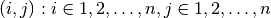
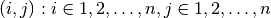
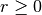
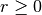
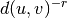
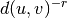

navigable_small_world_graph¶
Return a navigable small-world graph.
A navigable small-world graph is a directed grid with additional long-range connections that are chosen randomly. From [R269]:
Begin with a set of nodes that are identified with the set of lattice points in an
 square, 
and define the lattice distance between two nodes
square, 
and define the lattice distance between two nodes  and
and  to be the number of “lattice steps” separating them:
to be the number of “lattice steps” separating them:  .
.For a universal constant
 , the node
, the node  has a directed edge to every other
node within lattice distance (local contacts) .
has a directed edge to every other
node within lattice distance (local contacts) .For universal constants
 and  construct directed edges from to
and  construct directed edges from to  other nodes (long-range contacts) using independent random trials; the i’th
directed edge from has endpoint
other nodes (long-range contacts) using independent random trials; the i’th
directed edge from has endpoint  with probability proportional to .
with probability proportional to .Parameters : n : int
The number of nodes.
p : int
The diameter of short range connections. Each node is connected to every other node within lattice distance p.
q : int
The number of long-range connections for each node.
r : float
Exponent for decaying probability of connections. The probability of connecting to a node at lattice distance d is 1/d^r.
dim : int
Dimension of grid
seed : int, optional
Seed for random number generator (default=None).
References
[R269] (1, 2) J. Kleinberg. The small-world phenomenon: An algorithmic perspective. Proc. 32nd ACM Symposium on Theory of Computing, 2000.